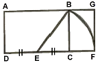
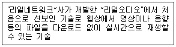
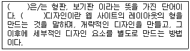
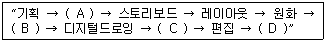

웹디자인기능사 (2014-04-06 기출문제)
1과목: 디자인 일반
1. 서로 반대되는 색상을 배색하였을 때 나타나는 느낌으로 옳은 것은?
- 강한 느낌
- 정적인 느낌
- 간결한 느낌
- 차분한 느낌
(정답률: 95%)

2. 커뮤니케이션 디자인에 대한 설명으로 틀린 것은?
- 라틴어 Communicare를 어원으로 한다.
- 두 개 이상의 개체가 기호를 매개로 무언가를 공유하는 것이다.
- 재료, 기능성, 입체, 질감 등의 요소를 이용하여 상품을 개발하는 것이다.
- 사람과 사람사이에 기호에 의해서 의미를 전달하는 과정이다
(정답률: 82%)
3. 흰색의 바탕 위에서 빨간색을 20초 정도 보고난 후, 빨간색을 치우면 앞에서 본 빨간색과 동일한 크기의 청록색이 나타나 보이는 현상은?
- 보색잔상
- 망막의 피로
- 계시대비
- 동시대비
(정답률: 78%)
4. 일반적으로 장식에 사용되는 단순화된 무늬나 규칙적으로 반복되는 단위도형을 말하며, 반복되는 모양의 기본이 되는 구성요소를 가리키고 있지만, 일반적으로는 그림이나 무늬와 같은 비주얼 디자인의 기초가 되는 조형만이 아니라, 일체의 반복되는 것에 대해 그 원형이 되는 조립단위를 가리키는 것은?
- 패턴
- 텍스쳐
- 질감
- 콜라쥬
(정답률: 95%)
5. 포스터 디자인의 조건으로 가장 적합한 것은?
- 일러스트레이션은 가급적 화려하게 표현한다.
- 눈에 잘 띄고, 독창적이어야 한다.
- 색상수를 많이 사용한다.
- 헤드라인은 반드시 고딕체를 사용한다.
(정답률: 92%)
6. 다음 그림과 같이 일부분이 끊어진 상태이지만 문자로 인식되는 것은 어떤 원리 때문인가?
- 규칙성
- 유사성
- 폐쇄성
- 연속성
(정답률: 73%)
7. 균형을 잡기 위한 디자인 기본요소가 아닌 것은?
- 명암
- 반복
- 크기
- 질감
(정답률: 37%)
8. 먼셀 표색계에 대한 설명으로 틀린 것은?
- 색상은 H(hue)라고 한다.
- 명도는 V(value)라고 한다.
- 채도는 C(chroma)라고 한다.
- 표기는 HV-C로 한다.
(정답률: 87%)
9. 색상환 24등분, 명도 단계 8등분의 색 체계를 구성하고 “조화는 질서와 같다”는 색채 조화 이론을 발표한 사람은?
- 오스트발트
- 슈브뢸
- 비렌
- 문·스펜스
(정답률: 86%)
10. 감산혼합에 사용되는 Cyan, Magenta, Yellow의 3원색으로 만들 수 없는 색은?
- Blue
- White
- Red
- Green
(정답률: 87%)
11. 색의 주목성에 대한 설명으로 옳지 않은 것은?
- 색의 진출, 후퇴, 팽창, 수축과 관련된 현상으로 사람들의 시선을 끄는 힘을 말한다.
- 거리의 표지판, 도로 구획선, 심벌마크 등 짧은 시간에 눈에 띄어야 하는 경우에 사용된다.
- 명시도가 높으면 상대적으로 주목성이 낮다.
- 명도, 채도가 높은 색이 주목성이 높다.
(정답률: 88%)
12. 일반적으로 디자인이 갖추어야 할 조건으로 가장 중요한 것은?
- 장식적인 요소를 만들어 주는 것
- 실용적인 기능과 조형적인 아름다움을 추구하는 것
- 상징적인 형태로 단순화시키는 것
- 타제품과 차별화 시키는 것
(정답률: 88%)
13. 다음 그림은 무엇을 구하는 도형인가?

- 삼각형 분할
- 황금비례
- 루트구형
- 아심메트리
(정답률: 83%)
14. 디자인 과정의 일반적인 순서로 옳은 것은?
- 재료과정 – 기술과정 – 욕구과정 - 조형과정
- 욕구과정 – 조형과정 – 재료과정 - 기술과정
- 조형과정 - 욕구과정 - 재료과정 - 기술과정
- 기술과정 - 조형과정 – 재료과정 - 욕구과정
(정답률: 74%)
15. 3차원을 표현하는 디자인의 요소가 아닌 것은?
- 깊이
- 너비(폭)
- 길이
- 방향
(정답률: 46%)
16. 감산혼합의 설명으로 맞는 것은?
- 원색을 모두 섞으면 흰색이 된다.
- 혼합하면 혼합할수록 채도는 높아진다.
- 혼합하면 혼합할수록 명도가 낮아진다.
- 인상파 화가의 점묘화나 작품에서 나타나는 혼합이다.
(정답률: 70%)
17. 다음 색 이름 중 관용색명이 아닌 것은?
- 금색
- 살색
- 새빨강색
- 에머랄드 그린
(정답률: 75%)
18. 다음 그림에서 느낄 수 있는 디자인 원리는?
- 율동
- 비례
- 조화
- 강조
(정답률: 88%)
19. 한 운전자가 운전을 하던 중 도로 표지판을 보지 못하고 지나쳐 자동차운행금지구역으로 들어오게 되었다. 도로 표지판에 보완해야 할 색채계획으로 가장 옳은 것은?
- 표지판에 명도차가 큰 배색을 활용해 주목성을 높인다.
- 채도가 높은 색은 강한 느낌을 주므로 고채도의 색상으로 표지판을 칠한다.
- 한색보다는 난색이 주목성이 높으므로 배경과 대상물을 빨간색 계열의 색상으로 칠한다.
- 주목성이 높은 난색의 경우 운전자가 흥분을 할 수 있으므로 차가운 계열의 차분한 색상으로 도로 표지판을 칠한다.
(정답률: 54%)
20. 디자인의 원리 중 율동의 요소에 해당하지 않는 것은?
- 반복
- 비례
- 강조
- 변칙
(정답률: 57%)
2과목: 인터넷 일반
21. 동적 HTML에 대한 설명으로 틀린 것은?
- 홈페이지를 다이나믹하게 구성하기 위한 기법이다.
- 기존 HTML에 정적인 화면을 만들어 주는 HTML이다.
- 기존의 HTML문서에 CSS 기능을 첨가하였다.
- 기존의 HTML문서에 문서객체모델(DOM) 기능을 첨가하였다.
(정답률: 72%)
22. 자바스크립트의 변수에 대한 설명으로 옳지 않은 것은?
- 변수를 선언하지 않고 사용하는 경우에는 전역변수가 된다.
- 지역변수는 반드시 함수 내에서만 선언 되어야 한다.
- 지역변수 선언은 Dim 키워드를 사용하여 선언 한다.
- 지역변수는 선언된 중괄호{ } 안에서만 사용할 수 있다.
(정답률: 58%)
23. IPv6은 몇 비트 주소 체계인가?
- 48비트
- 64비트
- 96비트
- 128비트
(정답률: 70%)
24. 다음 중 검색 엔진을 이용하여 정보 검색을 할 때 가장 많은 정보를 검색하는 경우는?
- 인터넷 AND 학교
- 인터넷 OR 학교
- 인터넷 NEAR 학교
- 인터넷
(정답률: 56%)
25. 문서 간 이동이나 한 문서 내에서의 이동을 위해 사용되는 링크를 의미하며, 특정한 단어나 그림을 선택하면 이들과 연결된 다른 문서나 혹은 다른 미디어로 이동하는 역할을 하는 것은?
- HTTP Text Transfer Protocol
- Hyper Text Markup Language
- Hyperlink
- Browser
(정답률: 82%)
26. 웹페이지 검색 엔진 중 여러 검색 엔진을 한 곳에 모아두고 마음에 드는 것을 선택하여 검색 할 수 있게 해 주는 검색 엔진으로 각 분야별로 전문 검색 엔진들을 제공하며, 보다 자세한 검색이 가능한 것은?
- 통합형 검색 방식
- 웹 디렉터리 방식
- 웹 인덱스 방식
- 메타형 검색 방식
(정답률: 51%)
27. 검색어를 이용하는 키워드형 검색엔진과 카테고리를 이용하는 주제별 검색엔진의 특징을 모두 제공하는 검색엔진은?
- 로봇 에이전트
- 디렉터리형 검색 엔진
- 하이브리드형 검색 엔진
- 복합 우선순위형 검색 엔진
(정답률: 64%)
28. HTML을 이용하여 홈페이지를 제작할 경우 배경음악을 삽입하기 위해 주로 사용하는 태그는?
- <BGSOUND src="파일명">
- <MUSIC src="파일명">
- <LINK href="파일명">
- <OBJECT id="파일명">
(정답률: 74%)
29. 도메인 네임에 대한 설명으로 틀린 것은?
- IP 주소를 대신해 사용자가 기억하기 쉽게 이름을 사용한 것이다.
- 도메인 네임에서 kr, au, ca, fr 등은 각각 해당 국가를 나타낸다.
- 도메인 네임 서버는 서로 다른 네트워크를 연결하는 중개 서버이다.
- 도메인 네임으로 소속단체의 이름과 성격을 알 수 있다.
(정답률: 63%)
30. 다음 중 인터넷 쇼핑몰의 특징으로 볼 수 없는 것은?
- 언제 어디서든 쇼핑몰의 이용이 가능하다.
- 구매자와 판매자간의 신뢰를 구축하는 것이 중요하다.
- 고객의 취향을 파악하여 정확한 target 마케팅이 가능하다.
- 인터넷 쇼핑몰의 활성화는 지역사회를 활성화 시키는 계기가 된다.
(정답률: 88%)
31. 사용자가 쉘 계정이 있는 호스트에 직접 접속하여 메일을 읽지 않고 자신의 PC에서 바로 로컬 메일 리더를 이용하여 자신의 메일을 다운로드 받아서 보여주는 것을 정의하는 프로토콜은?
- POP
- IMAP
- SMTP
- MIME
(정답률: 36%)
32. 다음 중 네트워크의 종류에 해당하지 않는 것은?
- LAN(Local Area Network)
- MAN(Metropolitan Area Network)
- WAN(Wide Area Network)
- NAN(Nation Area Network)
(정답률: 70%)
33. 자바스크립트에서 사용자의 특정한 행동에 대해 어떤 처리를 해 줄 것인가를 정의하는 것은?
- complier
- class object
- event handler
- event class
(정답률: 61%)
34. 자바스크립트에서 제공하는 내장객체가 아닌 것은?
- Array
- Date
- Frame
- Math
(정답률: 58%)
35. 자바스크립트의 함수 중 입력된 값이 숫자인지 아닌지의 여부를 판단하는 함수는?
- isNaN( )
- escape( )
- confirm( )
- alert( )
(정답률: 56%)
36. 무선랜을 이용하여 네트워크를 구성하는 방법으로 AP(Access Point)를 중심으로 노드들을 제어하는 것은?
- Ad Hoc
- Central
- Ring
- Star
(정답률: 49%)
37. 인터넷 상에서 전자메일을 전송할 때 쓰이는 표준적인 프로토콜은?
- FTP
- Telnet
- NNTP
- SMTP
(정답률: 76%)
38. 웹 문서 작성을 위한 국제 표준 언어가 아닌 것은?
- HTML
- UML
- XHTML
- XML
(정답률: 73%)
39. 스패밍(Spamming)에 대한 설명으로 틀린 것은?
- 웹 페이지 안에 정보검색이 잘되도록 키워드를 특이하게 명시하는 방법이다.
- 검색 엔진에 따라 스팸 패널티를 할당하여 검색 우선순위를 하향 조정하는 경우도 있다.
- 하나의 웹 페이지 내에 동일한 키워드가 5번 이상 반복되면 스패밍 작업을 한 것으로 간주된다.
- 웹페이지, 뉴스나 이메일 등에서도 적은 비용으로 상품과 기업 광고 빛 비방하는데 사용되는 경우가 많다.
(정답률: 43%)
40. 웹브라우저에 해당하지 않은 것은?
- 사파리
- 아파치
- 넷스케이프
- 인터넷 익스플로러
(정답률: 77%)
3과목: 웹그래픽스 디자인
41. 비트맵 이미지의 픽셀이 사각형이기 때문에 곡선 부분에서 들쑥날쑥하고 거칠게 나타나는 계단현상을 최소화시키는 기법은?
- 매핑(Mapping)
- 쉐이딩(Shading)
- 안티-앨리어싱(Anti-aliasing)
- 렌더링 (Rendering)
(정답률: 88%)
42. 다음 중 수학적 연산을 이용하여 명확한 선과 면으로 그래픽 데이터를 표현하는 방식은?
- 벡터 방식
- 비트맵 방식
- 래스터 방식
- 포스트스크립트
(정답률: 74%)
43. 컴퓨터 그래픽스 역사 중 고밀도 집적 회로(LSI)개발로 컴퓨터가 소형화되면서 개인용 컴퓨터(PC)가 등장한 세대는?
- 1세대 (1946년~1950년대 말)
- 2세대 (1950년대 말~1960년대 중반)
- 3세대 (1960년대 말~1970년대 초)
- 4세대 (1970년대 중반~1980년대 말)
(정답률: 66%)
44. 애니메이션 제작의 특수 효과 중 하나로 축소형으로 입체 모델을 만들고 여기에 다른 기법을 병합하여 장면을 만드는 것은?
- 모핑 효과
- 로토스코핑 효과
- 미니어처 효과
- 페인팅 효과
(정답률: 80%)
45. 아래 보기에서 설명하고 있는 기술은 무엇인가?

- Gif 애니메이션
- 퀵타임(Quick-time)
- 스트리밍(Streaming)
- Flash 애니메이션
(정답률: 83%)
46. 다음 보기의 괄호 안에 공통으로 들어갈 용어는?

- 텍스트(text)
- 템플릿(Template)
- 프레임(Frame)
- 인터페이스(Interface)
(정답률: 62%)
47. 실사와 애니메이션을 혼합하는 기법으로, 실제장면을 촬영한 후 화면에 등장하는 캐릭터나 물체형태를 트레이싱하여 애니메이션의 기본형을 만드는 애니메이션 종류는?
- 플립 북 애니메이션
- 로토 스코핑
- 클레이 애니메이션
- 컷 아웃 애니메이션
(정답률: 64%)
48. 아래 보기의 컴퓨터 애니메이션의 단계별 제작 순서에서 괄호 안에 들어갈 제작과정이 A부터 D의 순서대로 맞게 나열된 것은?

- 시나리오, 디지털 채색, 녹음, 스캐닝
- 스캐닝, 시나리오, 디지털 채색, 녹음
- 시나리오, 스캐닝, 디지털 채색, 녹음
- 디지털 채색, 시나리오, 스캐닝, 녹음
(정답률: 77%)
49. 사이트 맵(site map)에 대한 설명으로 맞는 것은?
- 하이퍼링크를 말하며, 원하는 페이지로 이동할 수 있도록 해주는 경로이다.
- 그림의 일부에 하이퍼링크를 적용시켜 원하는 페이지로 이동할 수 있도록 하는 것이다.
- 웹 사이트의 전체 구조를 한 눈에 알아볼 수 있도록 트리 구조 형태로 만든 것이다.
- 웹 사이트의 좌측이나 우측에 메뉴, 링크 등을 모아둔 것을 말한다.
(정답률: 70%)
50. 웹 사이트 제작에서 경쟁사의 웹 사이트를 분석하는 이유로 틀린 것은?
- 해당 분야의 인터넷 시장을 파악한다.
- 경쟁 사이트들을 분석하여 자신의 사이트 경쟁력을 재고한다.
- 인터넷 시장의 흐름을 이해한다.
- 웹 사이트 제작에 필요한 콘텐츠를 얻는다.
(정답률: 64%)
51. 웹사이트에 삽입 할 콘텐츠를 구성한 후 이것을 웹이라고 하는 하이퍼링크 구조 안에서 어떻게 조직화할 것인가를 결정하는 것을 무엇이라 하는가?
- 컨셉트 개발
- 컨텐츠 기획
- 구조 설계
- 인터페이스디자인
(정답률: 68%)
52. 요구된 색상의 사용이 불가능할 때, 컴퓨터 프로그램에 의해 다른 색상들을 섞어서 비슷한 색상을 내는 방법을 무엇이라 하는가?
- 랜더링(Rendering)
- 그라데이션(Gradation)
- 디더링(Dithering)
- 모자이크(Mosaic)
(정답률: 73%)
53. 컴퓨터그래픽스의 기법 중 산맥이나 구름과 같이 불규칙적이고 균열된 물체를 표현하기 위해 그래픽 이론을 토대로 실물과 유사하게 표현하는 기법은?
- 광선 추적법
- 프랙탈(Fractal)
- 쉐이딩(Shading)
- 매핑(Mapping)
(정답률: 62%)
54. 컴퓨터 그래픽스 시스템의 입력 장치로 옳지 않은 것은?
- 조이스틱(Joy Stick)
- 디지타이저(Digitizer)
- 스캐너(Scanner)
- 프린터(Printer)
(정답률: 75%)
55. 웹 사용성(Web Usability)에 대한 원칙으로 거리가 먼 것은?
- 내용과 기능을 단순화
- 일관성 있는 디자인 유지
- 사용자를 위한 다양한 동영상, 인트로 구성
- 정보의 우선순위 고려
(정답률: 58%)
56. 웹사이트를 디자인하기 위한 조건으로 거리가 먼 것은?
- 관리하기 쉽도록 관리자 중심으로 제작한다.
- 일관성 있는 레이아웃으로 배치한다.
- 웹사이트의 주제를 쉽게 파악할 수 있도록 구성한다.
- 사용자(user)가 사용하기 편리한 환경을 제공한다.
(정답률: 85%)
57. 벡터 방식의 드로잉 프로그램이 아닌 것은?
- 일러스트레이터
- 코렐드로우
- 프리핸드
- 페인터
(정답률: 51%)
58. 웹페이지 제작을 도와주는 위지위그(WYSIWYG)프로그램이 아닌 것은?
- 프론트페이지(FrontPage)
- 드림위버(Dreamweaver)
- 나모(Namo Web Editor)
- 피디에프(PDF : Portable Document Format)
(정답률: 79%)
59. 웹 기획에서의 벤치마킹에 대한 설명으로 틀린 것은?
- 원래 경제용어로 자기분야에서 최고의 회사를 모델로 삼아 그들의 독특한 비법을 배우는 것을 말한다.
- 인터넷 비즈니스에서 사용되는 벤치마킹은 경쟁사와 시장을 분석하여 비즈니스를 성공적으로 끌고 나갈 수 있는 요소들을 찾아내는 것이다.
- 경쟁사의 성공 사례를 분석하고 경쟁사의 이미지를 그대로 활용하여 웹페이지를 제작한다.
- 경쟁사가 갖고 있는 않은 독특한 경쟁요소를 확보한다.
(정답률: 78%)
60. 플래시와 관련된 파일 확장자가 아닌 것은?
- .fla
- .swf
- .spa
(정답률: 78%)